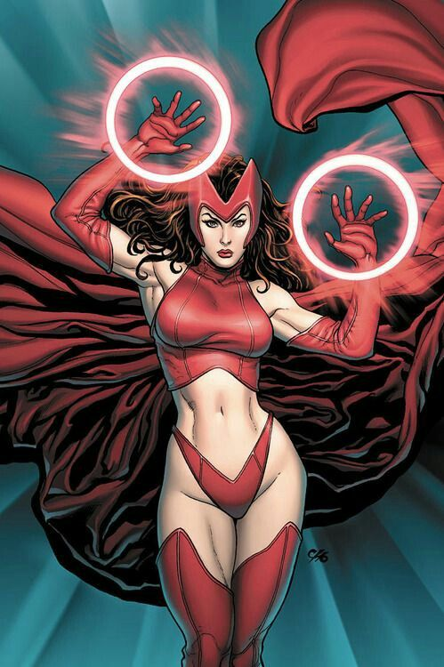
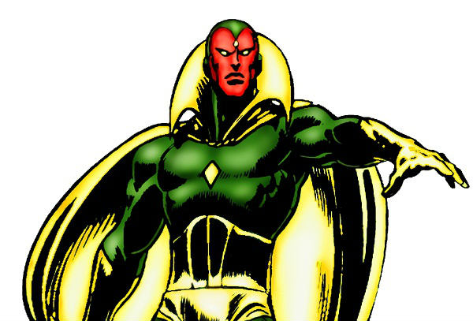
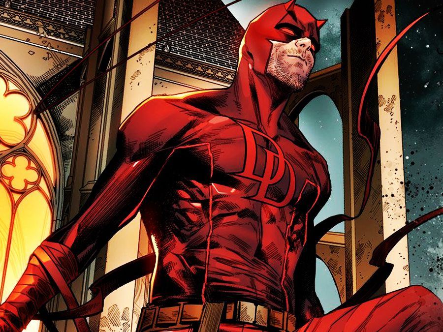
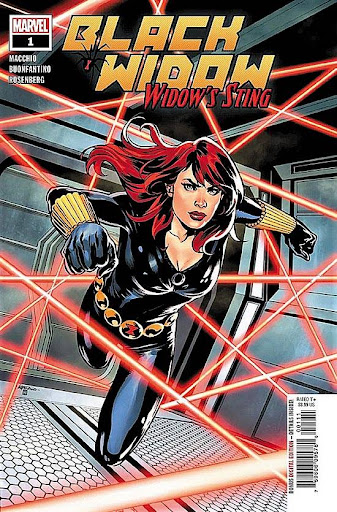

Feiticeira Escarlate
Wanda Maximoff, também conhecida como Feiticeira Escarlate,
é uma mutante com a habilidade de alterar a probabilidade,
o que significa que ela pode mudar a chance de algo acontecer.
Na prática, isso quer dizer que ela tem o poder de dar sorte para si
mesma e para seus aliados, e azar para seus inimigos. Depois de anos e anos de
treinamento sob a tutela de Agatha Harkness, uma bruxa mágica poderosa, os poderes da
Wanda se expandiram de dar sorte ou azar para as pessoas para uma manipulação da realidade completa.
Ela é a irmã gêmea do Mercúrio, e os dois têm um relacionamento muito próximo, mas meio que codependente.
A #1 coisa que fará com que qualquer um deles abandone seu código moral é proteger um ao outro.

Visão
O Visão é uma construção fantasmagórica e etérea que busca um lugar no mundo e
pratica o bem como um super-herói. O sintozoide criado pelo atroz Ultron para punir os
Vingadores que desafiaram sua programação original é o mais renomado Visão. Como membro dos
Vingadores, ele salvou a Terra de ameaças diversas vezes e é considerado um herói de coração puro e honrado.

Demolidor (Daredevil)
Matthew Michael "Matt" Murdock é um advogado e justiceiro de Nova York;
Hell's Kitchen conhecido como Demolidor. Ele ficou cego ainda jovem em um
acidente químico que também lhe deu habilidades especiais, como sentidos
sobre-humanos, agilidade, reflexos, resistência, coordenação e equilíbrio.
Ele era filho de Jack Murdock, um boxeador, e Margaret Grace, uma freira.
Começou a lutar contra o crime em Hell's Kitchen como Demolidor, o que o coloca
em conflito com vários supervilões como Rei do Crime e Mercenário.

Viuva Negra
Natasha Romanoff é uma super-espiã soviética que surgiu nas histórias
do Homem de Ferro em 1964. No princípio,ela era uma vilã que atormentava
a vida do herói, porém, depois virou uma aliada e ganhou participação
especial em várias histórias da editora, como Homem Aranha e Demolidor.
Também integrou o grupo Campeões, junto com Hércules, Motoqueiro Fantasma,
Homem de Gelo e Anjo, e é uma das melhores agentes da SHIELD,mas foi nos
Vingadores que ela ganhou importancia no universo Marvel. Orfã,Natasha
foi criada pelo soldado Ivan Petrovitch, até que ela foi recrutada pelo
KGB, onde foi treinada e parcialmente manipulada por lavagem cerebral.